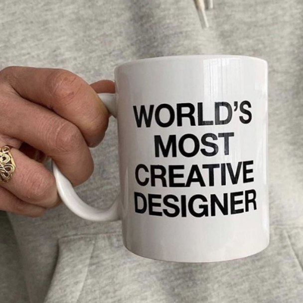

Термин

текст
text, copy
Последовательность знаков, слов, предложений и абзацев, передающая смысл.
Содержательная основа, которую дизайнер организует с помощью шрифта, вёрстки и других инструментов.
Джастин Сондерс (Justin Saunders), дизайн-студия «JJJJound», сувенирная керамическая кружка / подставка для карандашей «World's Most Creative Designer Pencil Holder White», Канада / США, 2019